Mysteriously discontinued in the mid-90s. Explore the lost Sega title.
ENTER THE NET. DEFEND THE FUTURE.

The last readable frames on the cartridge. The tape counter stops after six seconds.
Arrow keys move · A inspects · B returns · C continues · Start opens this screen